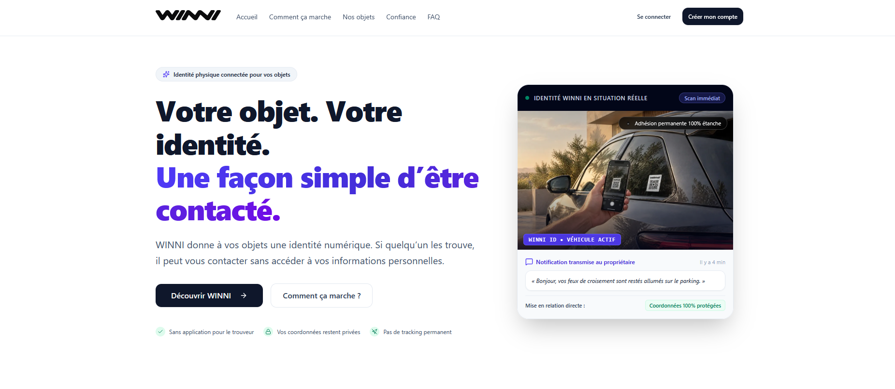
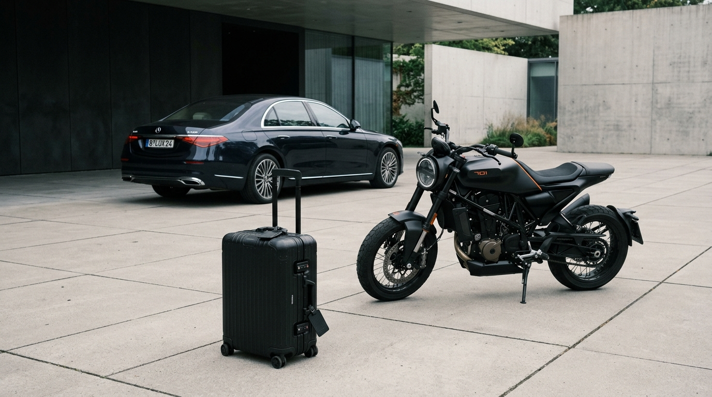
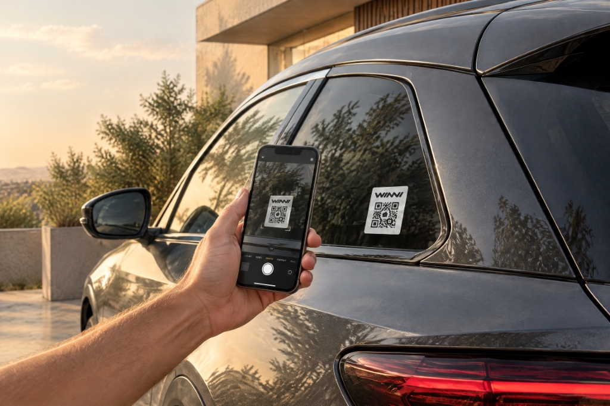
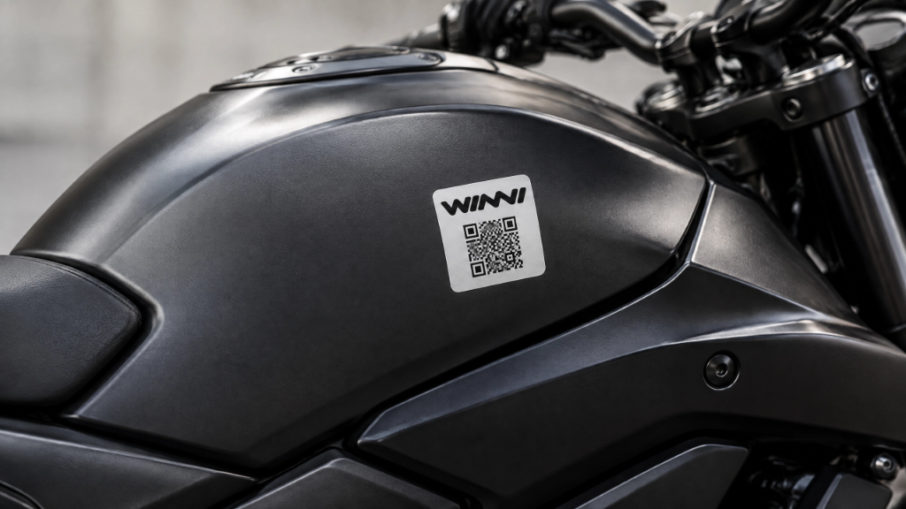
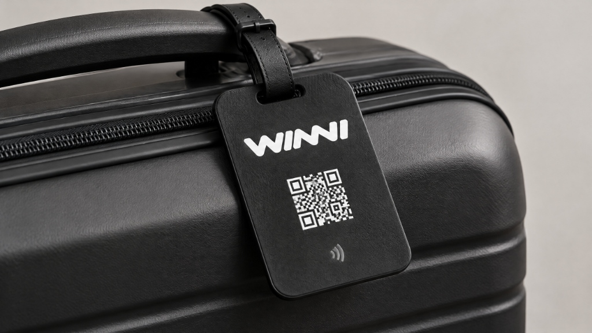

Giving lost things
a way back.
WINNI is a physical + digital identity system that helps people reconnect with lost belongings through a simple QR/NFC interaction.

When something gets lost, the object loses its connection to its owner.
Most physical belongings have no practical way to identify their owner without exposing private information.
- A phone number can be unsafe and invasive to publish openly on an object.
- A name alone is not enough to create an actionable communication link.
- A traditional label can label an object, but cannot create a safe, dynamic way to reconnect.

Car
Vehicle windshield & panel tag
Motorcycle
Durable chassis & tank cut
Luggage
Waterproof travel tag
Give your things a way back.
WINNI connects a physical object to a private digital identity. A finder doesn't need to download an application or create an account. They simply scan the WINNI tag.
The return is the story.
Technology is not the narrative—the safe return of the belongings is the narrative. WINNI establishes a direct, frictionless bridge between the physical world and a private cloud channel.
Designing the moment between a stranger and an owner.
The most important UX challenge wasn't building another complex management dashboard. It was designing the finder experience.
When someone spots an object with a WINNI tag, the context is unpredictable:
- They don't know WINNI and have never heard of it.
- They don't have an account and will abandon if forced to sign up.
- They may be in a hurry on the street, in a parking lot, or at an airport terminal.
- They need to trust the interface immediately without fear of malware or phishing.
- They should not see the owner's private information (no phone numbers or email exposed).
- They may optionally share where the object was found without feeling surveilled.
The Experience Imperative
Every screen in the finder journey must strictly honor four core pillars:
One scan. One clear path.
This is the core interface of WINNI: five sequential mobile states engineered to move from a physical glance to a resolved contact in seconds.
Le propriétaire a activé la mise en relation sécurisée.
Le propriétaire a reçu votre notification instantanément par canal sécurisé.
Helping without exposing.
WINNI doesn't need to reveal the owner's phone number or personal identity to the finder. The entire interaction happens mediated safely through the product.
In traditional lost-and-found situations, leaving a phone number or address on luggage or vehicle dashboards presents serious security and harassment risks.
With WINNI, the finder only interacts with a secure, ephemeral proxy. Both parties remain completely anonymous while enabling full operational communication.
This demonstrates product thinking over plain UI design: solving human trust boundaries before laying down visual pixels.
FINDER
WINNI
OWNER
Location is a choice, not surveillance.
WINNI can allow the finder to share where they found the object. But WINNI is not a live tracking system.
Live Tracking / Continuous Surveillance
Generic tracking devices promote live GPS pings, invasive battery tracking, and surveillance beams. Finders feel observed; owners mistake tags for military-grade radars.
- Creates intimidation and mistrust for the finder.
- Falsely promises continuous telemetry on unpowered tags.
- Breeds surveillance anxiety instead of human solidarity.
One-time Contextual Sharing
The finder voluntarily offers a single location snapshot to assist the owner. If permissions are denied, the recovery flow continues without interruption.
- Restrained location graphic (calm radius, no pulsing beams).
- Failure or refusal never blocks the contact form.
- Communicates mutual helpfulness and voluntary civic action.
The interface doesn't end on the screen.
WINNI exists on the actual object. This tactile existence strongly differentiates the product from a conventional SaaS utility.

Car Vehicle Tag
Sticker attached to rear window quarter panel or bodywork. Designed to withstand weather, high-pressure car washes, and UV exposure.
- 100% Waterproof vinyl
- Anti-UV protective lamination
- Zero adhesive residue on removal

Motorcycle Frame Cut
Sticker applied to durable metal chassis or tank. High contrast typography and QR density optimized for immediate smartphone lens focus.
- High chemical resistance (petrol/grease)
- Instant scan from 1.5m distance
- Discreet industrial monochrome cut

Travel Tag & Badge
Attached to hard-shell suitcases or bags in travel environments. Replaces vulnerable paper luggage tags with an indestructible digital link.
- Flexible strap & rigid shell
- International airport baggage proof
- Multilingual scan interface
One identity. Multiple touchpoints.
A cohesive visual and logical architecture spanning physical stickers, mobile web browsers, and administrative controls.
| TOUCHPOINT | PHYSICAL ARTIFACT | DIGITAL LAYER |
|---|---|---|
| 01 · Identification | Durable vinyl sticker with matte black finish and high-contrast QR mark. | Direct URL resolution to /scan/:winniId without app store redirects. |
| 02 · Interaction | Camera optical scan or NFC tap directly from physical surface. | Lightweight mobile landing page recognizing object category and status. |
| 03 · Communication | Zero on-object contact details (no printed phone number or personal address). | Anonymous message proxy routing through secure notification backend. |
| 04 · Context | Object location in physical space (parking spot, train, airport terminal). | Optional single-shot geocoordinates with map preview for owner context. |
| 05 · Resolution | Physical hand-off or owner retrieval of belongings. | Status transition to "Object Recovered", archive interaction safely. |
Quiet technology.
Designed around black, white, graphite, and warm neutrals. Functional color is introduced only when it communicates a verified system state.
Color Foundations
TYPOGRAPHY HIERARCHY
ICON SYSTEM (24 × 24 GRID · 1.75PX STROKE)
Consistent GeometryNon-directional object icons remain invariant in RTL (Arabic) contexts, maintaining immediate visual recognition across language barriers.
Motion should reassure, not entertain.
Motion is intentionally restrained because the product needs to communicate confidence and continuity rather than entertainment.
01 · Scan Recognized
Subtle confirmation ring confirms successful tag reading without harsh flashes.
02 · Message Sent
Stable success state locks into place, ensuring finder knows the owner was reached.
03 · Returned
Calm completion state closing the ticket and archiving communication gracefully.
What I Designed
A comprehensive look at the multidisciplinary responsibilities delivered across physical and digital domains.
Product Strategy
Defining the relationship between the physical object and digital identity, business viability, and low-friction recovery mechanics.
UX Design
Designing the scan, finder, contact, location, and return journeys, eliminating login walls and unnecessary cognitive load.
UI Design
Creating the mobile-first product experience, typography scale, responsive breakpoints, and tactile button components.
Brand & Visual System
Extending WINNI's identity across digital and physical touchpoints with restrained typography, geometric icons, and monochrome palette.
Physical Product
Designing how the identity appears on vehicle stickers, tags, durable cuts, and waterproof polymer adhesives.
Prototyping
Exploring flows, interactions, error boundaries, and real-world mobile test cases across varied daylight and device conditions.
WINNI isn't about QR codes. It isn't about tracking. It isn't about dashboards.
It's about creating a simple connection between: a person → an object → its owner.
From concept to working product.
Rather than relying on unverified vanity percentages, the milestone progression documents concrete system deliverables:
Material specifications, tag placement, and durability requirements.
Unique alphanumeric IDs, masked proxy channels, and route structures.
Zero-login mobile scan flow with optional geolocation sharing.
Object setup, notification receiving, and resolution confirmation.
Quiet technology branding across packaging, stickers, and software.
Functional prototype tested with actual physical sticker attachments.